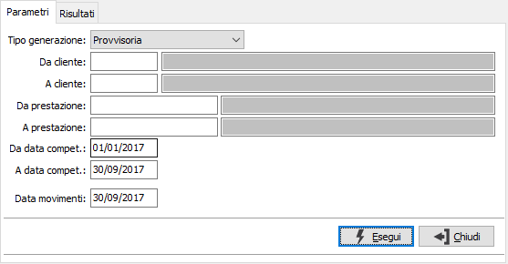
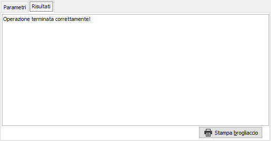

Generazione movimenti da prestazioni ricorrenti
Il programma provvede a generare automaticamente movimenti prestazioni esaminando le prestazioni ricorrenti inserite sulla tabella dei Clienti. Ne scorre gli elementi relativamente ai clienti selezionati, ne attualizza la data di inizio validità in relazione alla periodicità prevista per verificarne la congruenza con i parametri di data indicata dall’utente e, in caso positivo, genera un rigo di movimento prestazioni restituendone gli estremi. E’ prevista una elaborazione simulata, che si limita a produrre un report, e l’elaborazione definitiva.

TIPO GENERAZIONE: definisce il tipo di operazione da compiere: provvisoria oppure definitiva. La generazione provvisoria può essere effettuata più volte e non aggiorna nessuna tabella, ma genera soltanto la stampa di un brogliaccio; la generazione definitiva genera effettivamente i movimenti.
DA CLIENTE: codice del cliente, presente in anagrafica clienti, da cui si vuole iniziare la selezione. Confermando a vuoto, la selezione inizia dal primo cliente valido. Sul campo sono attive le funzioni di ricerca (F9).
A CLIENTE: codice del cliente, presente in anagrafica clienti, con cui si vuole terminare la selezione. Confermando a vuoto, la selezione termina con l'ultimo cliente valido. Sul campo sono attive le funzioni di ricerca (F9).
DA DATA COMPETENZA: data obbligatoria che definisce l’inizio del periodo da esaminare per la ricerca di prestazioni ricorrenti da generare. Il campo è obbligatorio.
A DATA COMPETENZA: data obbligatoria che definisce la fine del periodo da esaminare per la ricerca di prestazioni ricorrenti da generare. Il campo è obbligatorio.
DATA MOVIMENTI: indica la data con cui deve essere effettuata la registrazione dei movimenti in caso di generazione definitiva; il campo è obbligatorio e viene proposta la data di sistema.
La pressione sul pulsante Esegui determina l'inizio dell'elaborazione dei documenti. Il risultato viene visualizzato nella pagina 'Risultati'.

Nella pagina vengono visualizzati i risultati dell'elaborazione; qui vengono indicati, se si sono verificati, eventuali errori nei dati elaborati. Con il pulsante Stampa brogliaccio può essere eseguita direttamente la stampa dei movimenti generati, se l'elaborazione è definitiva, oppure di quelli che saranno generati se l'elaborazione è provvisoria.